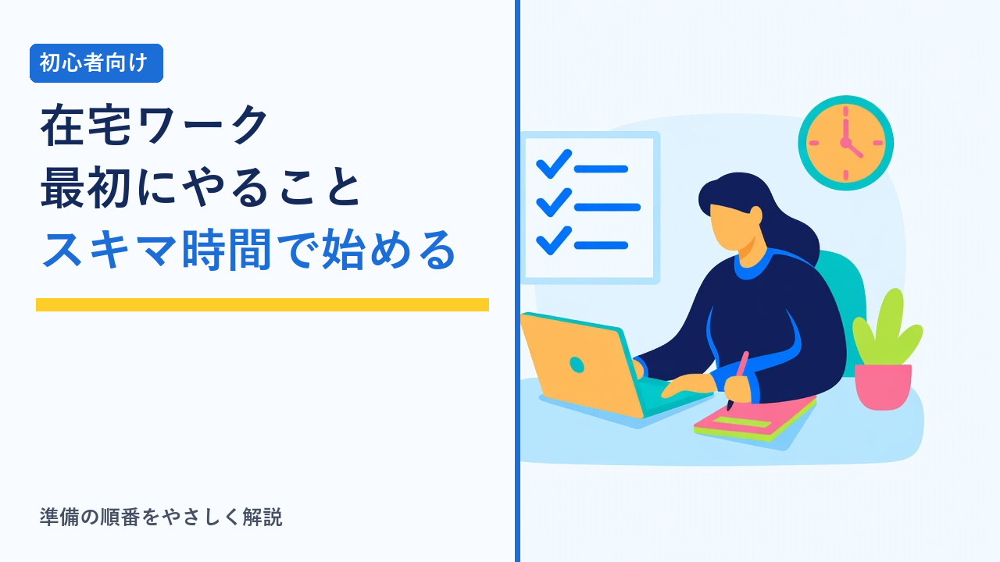
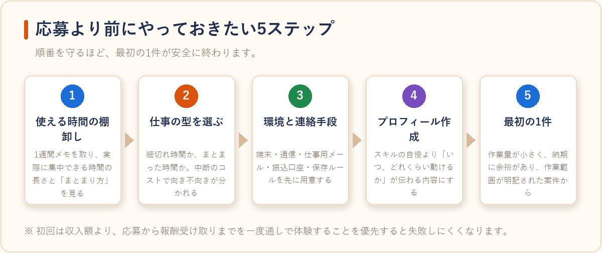
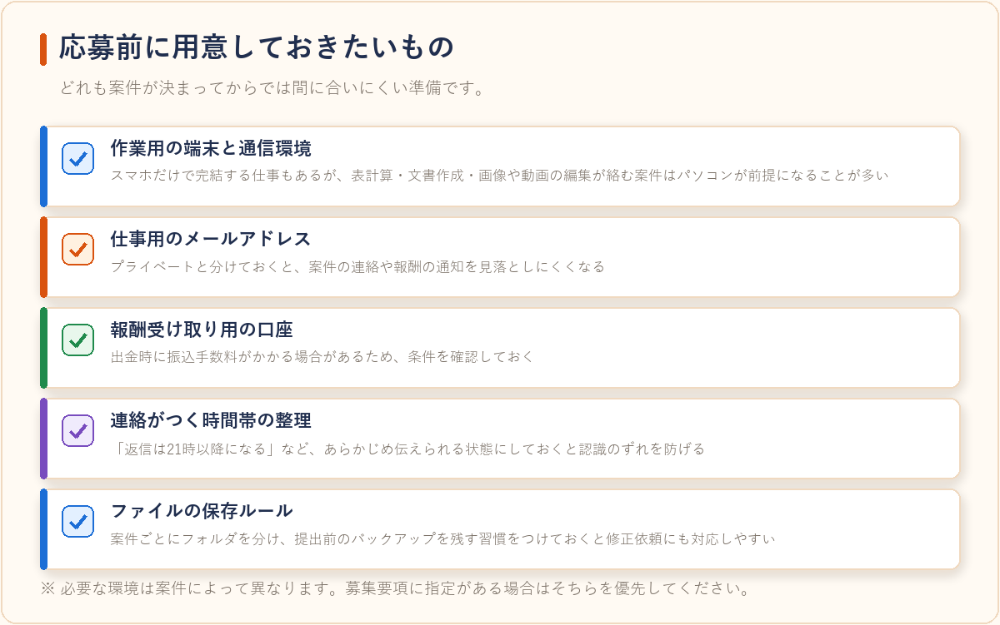
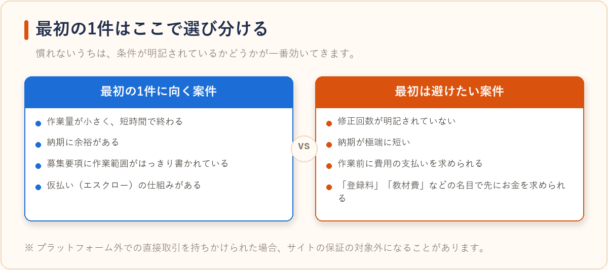

スキマ時間の在宅ワーク、初心者が最初にやるべきことまとめ
2026-08-15 更新

「まとまった時間は取れないけれど、通勤前の30分や子どもの寝かしつけ後の1時間なら使えそう」——在宅ワークに関心を持つきっかけとして、こうしたスキマ時間の活用はよくあるパターンです。ただ、いきなり案件に応募しても、思ったより時間がかかって納期に追われたり、条件を確認しないまま受注して割に合わなかったりすることがあります。この記事では、スキマ時間で在宅ワークを始める初心者が、応募より前にやっておきたい準備を順番に整理します。

ステップ1：使える時間を「実際に」棚卸しする
最初にやるべきなのは、案件探しではなく自分の可処分時間の把握です。頭の中の「たぶん空いている時間」と、実際に集中して作業できる時間には、たいてい差があります。1週間ほど、平日・休日それぞれで「何時から何時まで、何分間、邪魔が入らずに作業できたか」をメモしてみると、現実的な稼働時間が見えてきます。
ここで大事なのは、時間の「長さ」だけでなく「まとまり方」を見ることです。同じ週5時間でも、30分×10回と2時間×2.5回では、向いている仕事の種類が変わります。細切れの時間しか取れない場合、集中して一気に仕上げるタイプの案件は途中で中断が入り、かえって時間がかかることがあります。
ステップ2：時間のまとまりに合った仕事の型を選ぶ
スキマ時間の在宅ワークは、「中断してもやり直しコストが小さいか」で向き不向きが分かれます。下表は、確保できる時間の形と相性のよい仕事の型を整理したものです。
| 使える時間の形 | 相性のよい仕事の型 | 注意したい点 |
|---|---|---|
| 10〜20分の細切れ（移動中・待ち時間など） | アンケート回答、短文入力、簡単なタスク形式の作業 | 1件あたりの報酬は小さく、まとまった収入にはなりにくい |
| 30分〜1時間を毎日確保できる | データ入力、リスト作成、短めの記事作成、文字起こしの分割作業 | 納期までの残り日数から逆算し、1日分の作業量を決めておく |
| 週末など2〜3時間まとめて取れる | 記事作成、デザイン、動画編集などの制作系 | 修正対応の時間を見込んでおかないと、納期直前に詰まりやすい |
| 平日日中に一定時間、継続して取れる | 事務代行、オンラインアシスタントなどの継続契約 | 稼働時間帯の約束が前提になるため、生活リズムが変わると調整が必要 |
案件ジャンルごとの内容や単価の考え方は、クラウドソーシングでよくある案件ジャンルとその相場感まとめで詳しく整理しています。
ステップ3：作業環境と連絡手段を先に整える
受注してから環境を整えようとすると、初回の納品でつまずきやすくなります。応募前に、次のものは用意しておくと安心です。
- 作業用の端末と通信環境：スマホだけで完結する仕事もありますが、表計算や文書作成、画像・動画の編集が絡む案件はパソコンが前提になることが多いです。
- 仕事用のメールアドレス：プライベートと分けておくと、案件の連絡や報酬の通知を見落としにくくなります。
- 報酬受け取り用の口座：出金時に振込手数料がかかる場合があるため、条件を確認しておきましょう。
- 連絡がつく時間帯の整理：「返信は21時以降になる」など、あらかじめ伝えられる状態にしておくと、認識のずれを防げます。
- ファイルの保存ルール：案件ごとにフォルダを分け、提出前のバックアップを残す習慣をつけておくと、修正依頼にも対応しやすくなります。

ステップ4：プロフィールを「稼働条件が伝わる」内容にする
クラウドソーシングでは、発注者は応募文とプロフィールだけで判断します。実績がない段階では、スキルの自慢よりも「いつ、どれくらい動けるのか」が伝わることのほうが選ばれる材料になります。週あたりの稼働可能時間、対応できる曜日・時間帯、返信の目安、使えるソフトやツールを具体的に書いておくと、条件の合う案件からの反応が得やすくなります。
登録からプロフィール作成、応募までの具体的な流れは、クラウディアの始め方：登録から案件応募までの流れにまとめています。
ステップ5：最初の1件は「小さく・確認しやすい案件」から
初回は収入額よりも、一連の流れを最後まで体験することを優先すると失敗しにくくなります。応募 → 契約 → 作業 → 納品 → 検収 → 報酬受け取りまでを一度通しておくと、2件目以降の見積もりが現実的になります。作業量が小さく、納期に余裕があり、募集要項に作業範囲がはっきり書かれている案件が向いています。
逆に、最初の1件で避けたいのは、修正回数が明記されていない案件、納期が極端に短い案件、作業前に費用の支払いを求める案件です。特に「登録料」「教材費」などの名目で先にお金を求められるものは、仕事の紹介とは性質が異なるため、条件をよく確認しましょう。

選び方のポイント
- 実質時給で比べる：報酬額 ÷（リサーチ・作業・修正・やり取りを含む想定時間）で計算すると、案件同士を同じ物差しで比べられます。慣れないうちは想定時間を多めに見積もっておくのが無難です。
- 作業範囲が書かれているかを最優先で見る：納品形式、修正回数、連絡手段、納期が明記されている案件は、後から作業が膨らみにくい傾向があります。
- 継続案件を1本持つと管理が楽になる：毎回応募し直す時間も実質的なコストです。単価が同程度なら、継続前提の案件のほうがスキマ時間との相性は良くなります。
- 仮払い・エスクロー制度の有無を確認する：多くのクラウドソーシングでは、発注者が事前に報酬を預ける仕組みがあります。プラットフォーム外での直接取引を持ちかけられると、この保護の対象外になる場合があります。
- スキルより「短時間で終わる作業」を軸に選ぶ：単価の高さより、同じ時間でこなせる量のほうが手取りに効きます。得意な作業から広げるほうが結果的に近道です。
事務作業を「受ける側」ではなく「任せる側」として検討している事業者向けには、オンラインアシスタントという選択肢もあります。向いているケースはオンラインアシスタントサービスが向いている事業者の特徴で整理しています。
続けるための仕組みづくり
スキマ時間の在宅ワークで挫折しやすいのは、「時間がある日にまとめてやろう」と先延ばしにして、結局納期前に慌てるパターンです。受注した時点で、納期から逆算して1日あたりの作業量を決め、カレンダーやリマインダーに落としておくと安定します。また、稼働時間と報酬を簡単に記録しておくと、実質時給の実績値が分かり、次の案件を選ぶときの判断材料になります。
収入が増えてきたら、確定申告や住民税申告が必要になる場合があります。基準は会社員の副業か専業かで異なるため、早めに確認しておくと安心です。契約形態や税金の基礎は在宅ワークで注意したいこと：契約・報酬・確定申告の基礎知識まとめで解説しています。
よくある質問
スマホだけでも在宅ワークは始められますか？
アンケート回答や短文入力など、スマホで完結する案件はあります。ただし、表計算ソフトを使うデータ入力、文書の書式指定がある記事作成、画像・動画の編集などはパソコンを前提とした募集が多く、応募できる案件の幅は狭くなります。まずスマホで始めて、続けられそうならパソコン環境を整える、という進め方もあります。
1日30分でも意味はありますか？
金額としては大きくなりにくいものの、評価や実績を積むという点では意味があります。クラウドソーシングでは、過去の受注実績や評価が次の応募の通りやすさに影響するため、小さな案件でも完了実績を重ねること自体が次につながります。ただし、短時間で無理に高収入を目指す前提の情報には注意が必要です。
複数のサービスに登録してもいいですか？
多くのサービスは併用を禁止していません。募集されている案件の傾向や手数料はサービスごとに異なるため、いくつか登録して比較したうえで、主に使うサービスを決める人もいます。ただし、同時期に受注しすぎると納期管理が難しくなるため、スキマ時間で動く場合は特に受注数を抑えめにするのが無難です。サービスごとの違いは在宅ワーク・クラウドソーシングサービス比較で整理しています。